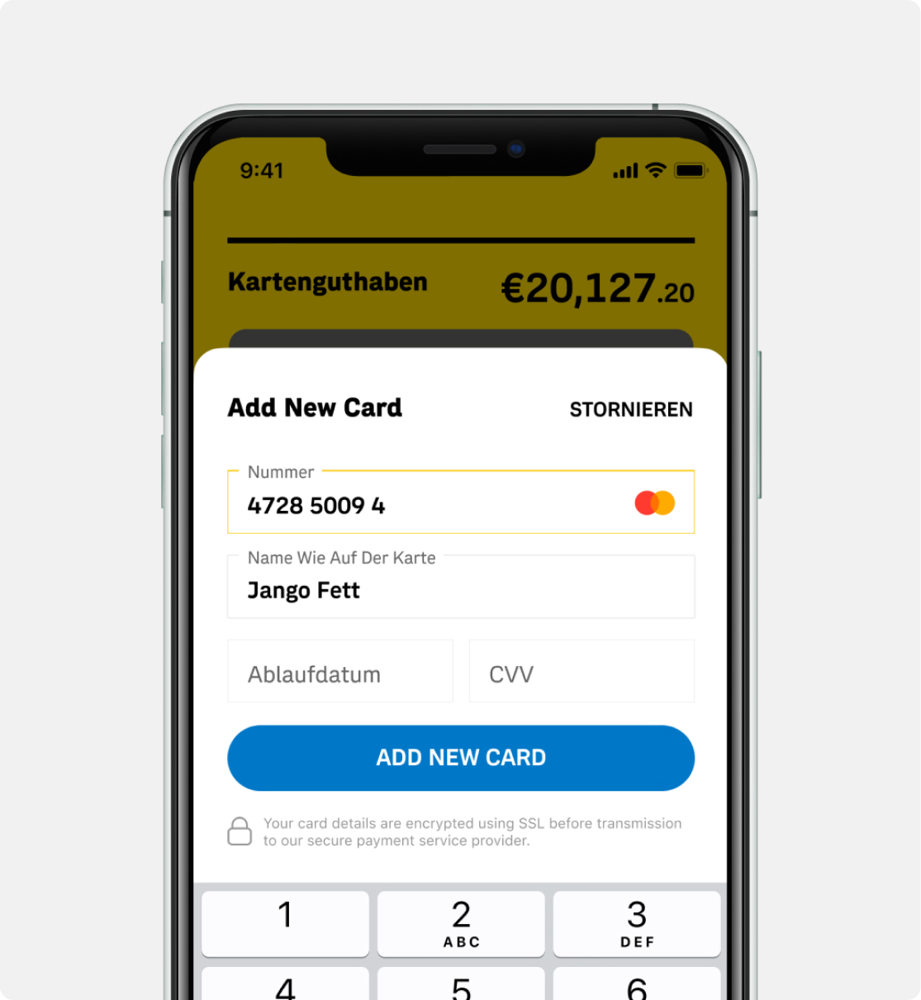
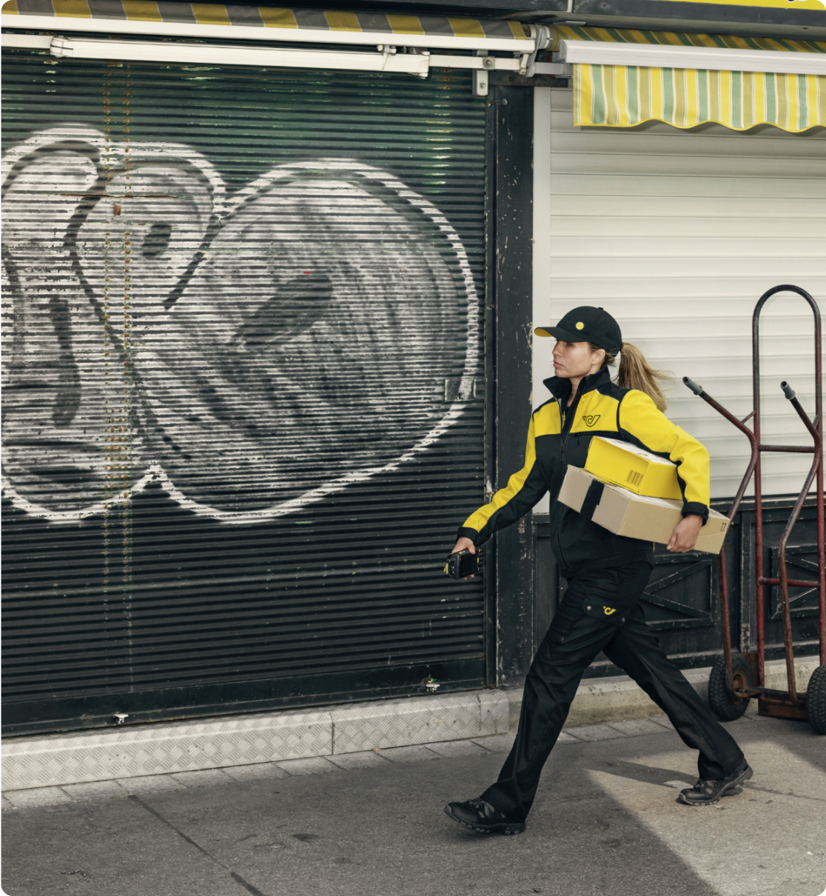
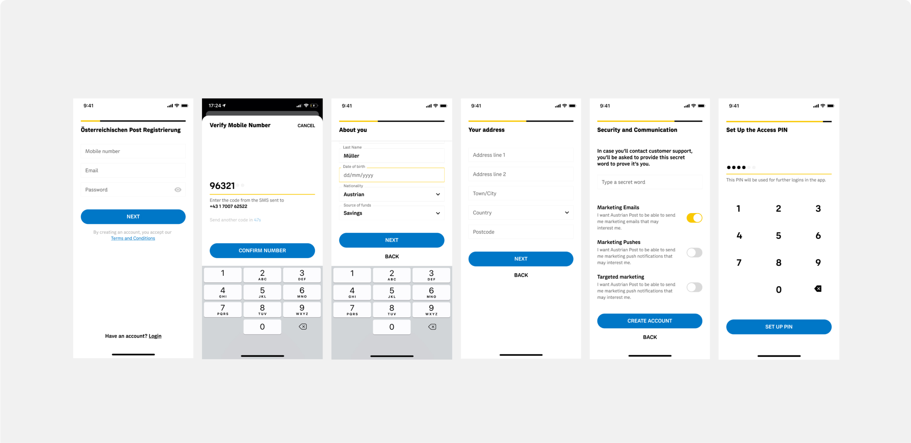
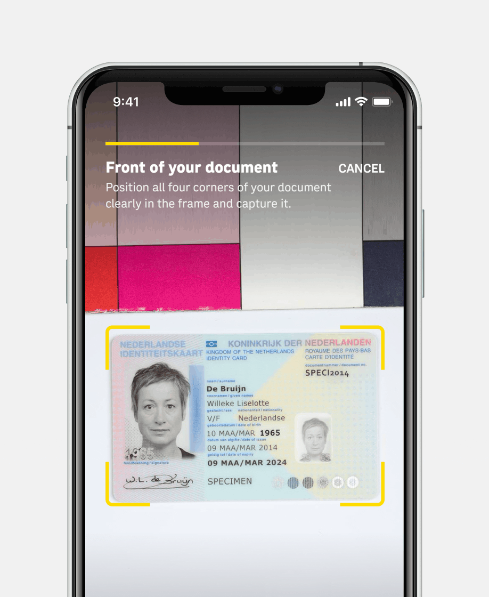
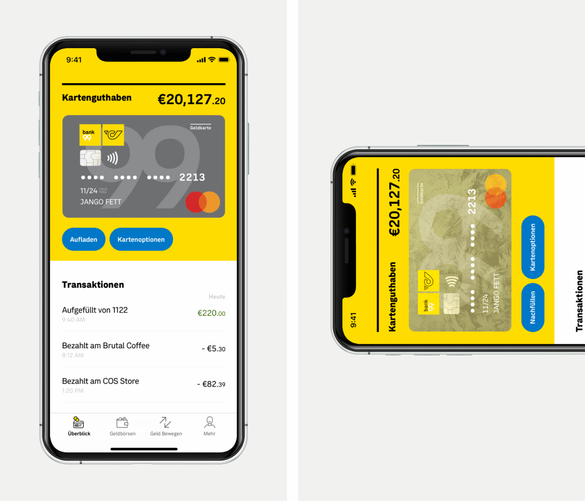
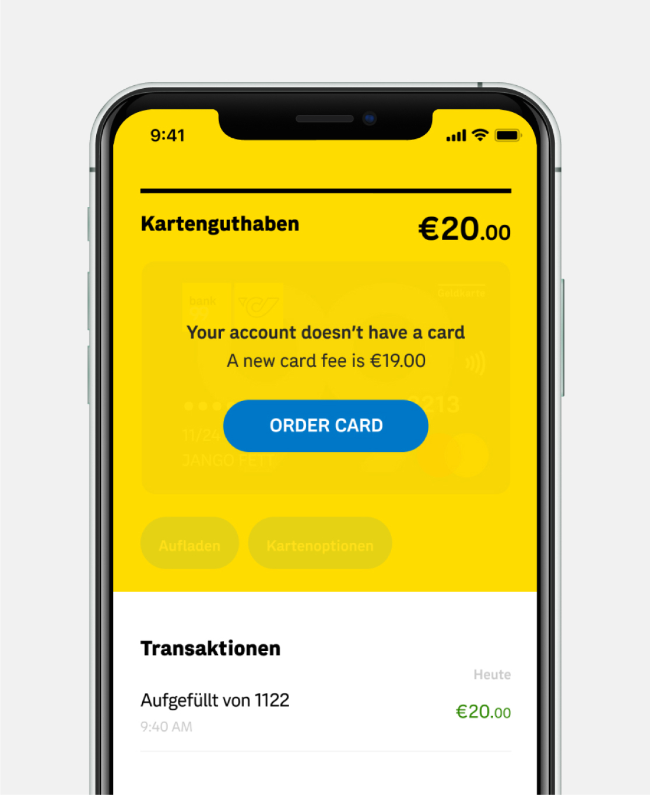

Omnio is a financial technology partner for banks, building societies, and credit unions; they help ‘bankify’ enterprises.
2019


The ask was to create and develop a mobile interface for the Omnio API. Its main purpose is to allow banks to replace legacy platforms by providing a modern back-end solution.
We kicked off the project with a discovery workshop at the client’s office in London. We’ve set the project goals and obtained as much information as possible about the possibilities and limitations of the technology.
The solution. We agreed to deliver a white-label solution, that can be customizable according to Omnio’s clients' branding. The first client to use the technology was Austrian Post AG. We further used Austrian Post’s branding to showcase the working product.
My role. I've led a team of two designers. Planned the timeline for the features to be delivered and delegated the tasks according to their abilities.

The account activation process was pretty long, so we’ve added a step-progress bar to it.

Architecture for the account activation.

Manual document upload for the eKYC verification.
Early on it was understood that one of the main painpoints for the users was the activation flow.
As it’s a banking app, and everything would happen online without the need to have a physical bank office –– there were lots of steps and checks that could scare the users off
I’ve synced with the stakeholders and back end developers with all the steps needed for the activation and created the user journeys so we’re all on the same page.
After that i’ve translated those into mockups.


The interface should support different European languages, depending on the client localization and his users. The official language in Austria is German, so their app should be exclusively in German. (An opportunity to test the longer strings!)
We’ve created a collaborative excel document providing all the english labels while the german translation were to be filled in by the Austrian Post team. It was fun seeing how long the german words are and nice that we could adjust the design for that.
Overall, the app provides a comprehensible user experience. It can be easily 'plugged' into other banks without being recognized. That’s precisely what the client was looking for.